import numpy
import pandas
import geopandas
import pysal
import seaborn
import contextily
import matplotlib.pyplot as plt
from sklearn.cluster import DBSCAN10 Point Pattern Analysis
Points are spatial entities that can be understood in two fundamentally different ways. On the one hand, points can be seen as fixed objects in space, which is to say their location is taken as given (exogenous). In this interpretation, the location of an observed point is considered as secondary to the value observed at the point. Think of this like measuring the number of cars traversing a given road intersection; the location is fixed, and the data of interest comes from the measurement taken at that location. The analysis of this kind of point data is very similar to that of other types of spatial data such as polygons and lines. On the other hand, an observation occurring at a point can also be thought of as a site of measurement from an underlying geographically-continuous process. In this case, the measurement could theoretically take place anywhere, but was only carried out or conducted in certain locations. Think of this as measuring the length of birds’ wings: the location at which birds are measured reflects the underlying geographical process of bird movement and foraging, and the length of the birds’ wings may reflect an underlying ecological process that varies by bird. This kind of approach means that both the location and the measurement matter. This is the perspective we will adopt in the rest of the chapter.
When points are seen as events that could take place in several locations but only happen in a few of them, a collection of such events is called a point pattern. In this case, the location of points is one of the key aspects of interest for analysis. A good example of a point pattern is geo-tagged photographs: they could technically happen in many locations, but we usually find photos tend to concentrate only in a handful of them. Point patterns can be marked, if more attributes are provided with the location, or unmarked, if only the coordinates of where the event occurred are provided. Continuing the photo example, an unmarked pattern would result if only the location where the photos are taken is used for analysis; while we would be speaking of a marked point pattern if other attributes, such as the time, camera model, or a “image quality score” was provided with the location.
10.1 Introduction
Point pattern analysis is thus concerned with the visualization, description, statistical characterization, and modeling of point patterns, trying to understand the generating process that gives rise and explains the observed data. Common questions in this domain include:
- What does the pattern look like?
- What is the nature of the distribution of points?
- Is there any structure in the way locations are arranged over space? That is, are events clustered? or are they dispersed?
- Why do events occur in those places and not in others?
At this point, it is useful to remind ourselves of an important distinction between process and pattern. The former relates to the underlying mechanism that is at work to generate the outcome we end up observing. Because of its abstract nature, we do not get to see it. However, in many contexts, the key focus of any analysis is to learn about what determines a given phenomenon and how those factors combine to generate it. In this context, “process” is associated with the how. “Pattern,” on the other hand, relates to the result of that process. In some cases, it is the only trace of the process we can observe and thus the only input we have to work with in order to reconstruct it. Although directly observable and, arguably, easier to tackle, pattern is only a reflection of process. The real challenge is not to characterize the former but to use it to work out the latter.
In this chapter, we provide an introduction to point patterns through geo-tagged Flickr photos from Tokyo. We will treat the phenomena represented in the data as events: photos could be taken of any place in Tokyo, but only certain locations are captured. Keep in mind this understanding of Tokyo photos is not immutable: one could conceive cases where it makes sense to take those locations as given and look at the properties of each of them ignoring their “event” aspect. However, in this context, we will focus on those questions that relate to location and the collective shape of locations. The use of these tools will allow us to transform a long list of unintelligible XY coordinates into tangible phenomena with a characteristic spatial structure, and to answer questions about the center, dispersion, and clustering of attractions in Tokyo for Flickr users.
10.2 Patterns in Tokyo photographs
The rise of new forms of data such as geo-tagged photos uploaded to online services is creating new ways for researchers to study and understand cities. Where do people take pictures? When are those pictures taken? Why do certain places attract many more photographers than others? All these questions and more become more than just rhetorical ones when we consider, for example, online photo hosting services as volunteered geographic information (VGI, (Goodchild 2007)). In this chapter we will explore metadata from a sample of geo-referenced images uploaded to Flickr and extracted thanks to the 100m Flickr dataset. In doing so, we will introduce a few approaches that help us better understand the distribution and characteristics of a point pattern.
To get started, let’s load the packages we will need in this example.
Then, let us load some data about picture locations from Flickr:
db = pandas.read_csv("../data/tokyo/tokyo_clean.csv")The table contains the following information about the sample of 10,000 photographs: the ID of the user who took the photo, the location expressed as latitude and longitude columns, a transformed version of those coordinates expressed in Pseudo Mercator, the timestamp when the photo was taken, and the URL where the picture they refer to is stored online:
db.info()<class 'pandas.DataFrame'>
RangeIndex: 10000 entries, 0 to 9999
Data columns (total 7 columns):
# Column Non-Null Count Dtype
--- ------ -------------- -----
0 user_id 10000 non-null str
1 longitude 10000 non-null float64
2 latitude 10000 non-null float64
3 date_taken 10000 non-null str
4 photo/video_page_url 10000 non-null str
5 x 10000 non-null float64
6 y 10000 non-null float64
dtypes: float64(4), str(3)
memory usage: 1.4 MBNote that the data is provided as a .csv file, so the spatial information is encoded as separate columns, one for each coordinate. This is in contrast to how we have consumed spatial data in previous chapters, where spatial information was stored in a single column and encoded in geometry objects.
10.3 Visualizing point patterns
There are many ways to visualize geographic point patterns, and the choice of method depends on the intended message.
10.3.1 Showing patterns as dots on a map
The first step to get a sense of what the spatial dimension of this dataset looks like is to plot it. At its most basic level, we can generate a scatterplot with seaborn in Figure 1:
# Generate scatter plot
seaborn.jointplot(x="longitude", y="latitude", data=db, s=0.5);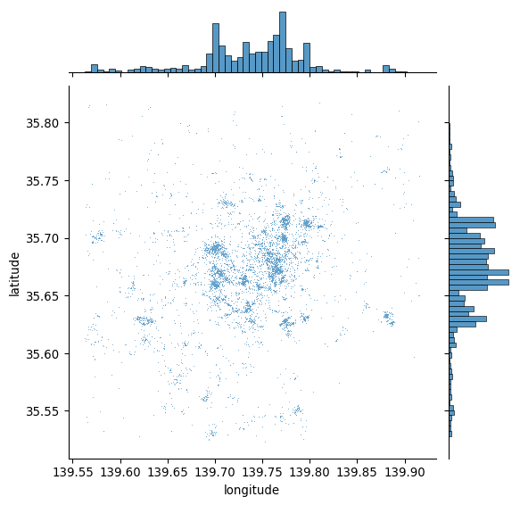
This is a good start: we can see dots tend to be concentrated in the center of the covered area in a non-random pattern. Furthermore, within the broad pattern, we can also see there seems to be more localized clusters. However, the plot above has two key drawbacks: one, it lacks geographical context; and two, there are areas where the density of points is so large that it is hard to tell anything beyond a blue blurb.
Start with the context. The easiest way to provide additional context is by overlaying a tile map from the internet. Let us quickly call contextily for that, and integrate it with jointplot to create Figure 2:
# Generate scatter plot
joint_axes = seaborn.jointplot(
x="longitude", y="latitude", data=db, s=0.5
)
contextily.add_basemap(
joint_axes.ax_joint,
crs="EPSG:4326",
source=contextily.providers.CartoDB.PositronNoLabels,
);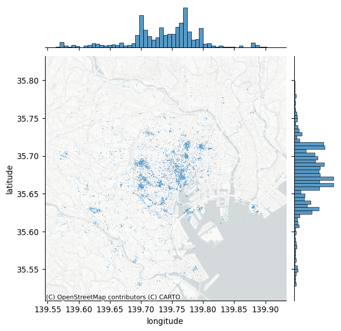
Note how we can pull out the axis where the points are plotted and add the basemap there, specifying the CRS as WGS84, since we are plotting longitude and latitude. Compared to the previous plot, adding a basemap to our initial plot makes the pattern of Flickr data clearer.
10.3.2 Showing density with hexbinning
Consider our second problem: cluttering. When too many photos are concentrated in some areas, plotting opaque dots on top of one another can make it hard to discern any pattern and explore its nature. For example, in the middle of the map in Figure 3, toward the right, there appears to be the highest concentration of pictures taken; the sheer amount of dots on the maps in some parts obscures whether all of that area receives as many pics or whether, within there, some places receive a particularly high degree of attention.
One solution to get around cluttering relates to what we referred to earlier as moving from “tables to surfaces”. We can now recast this approach as a spatial or two-dimensional histogram. Here, we generate a regular grid (either squared or hexagonal), count how many dots fall within each grid cell, and present it as we would any other choropleth. This is attractive because it is simple, intuitive and, if fine enough, the regular grid removes some of the area distortions choropleth maps may induce. For this illustration, let us use use hexagonal binning (sometimes called hexbin) because it has slightly nicer properties than squared grids, such as less shape distortion and more regular connectivity between cells. Creating a hexbin two-dimensional histogram is straightforward in Python using the hexbin function to create Figure 3:
# Set up figure and axis
f, ax = plt.subplots(1, figsize=(12, 9))
# Generate and add hexbin with 50 hexagons in each
# dimension, no borderlines, half transparency,
# and the reverse viridis colormap
hb = ax.hexbin(
db["x"],
db["y"],
gridsize=50,
linewidths=0,
alpha=0.5,
cmap="viridis_r",
)
# Add basemap
contextily.add_basemap(
ax, source=contextily.providers.CartoDB.Positron
)
# Add colorbar
plt.colorbar(hb)
# Remove axes
ax.set_axis_off()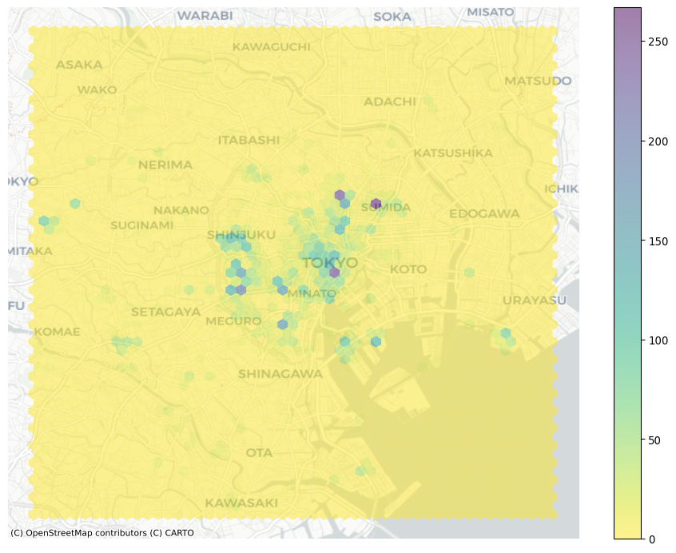
Voila, this allows a lot more detail! It is now clear that the majority of photographs relate to much more localized areas, and that the previous map was obscuring this.
10.3.3 Another kind of density: kernel density estimation
Grids are the spatial equivalent of a histogram: the user decides how many “buckets”, and the points are counted within them in a discrete fashion. This is fast, efficient, and potentially very detailed (if many bins are created). However, it does represent a discretization of an essentially contiguous phenomenon and, as such, it may introduce distortions (e.g., the modifiable areal unit problem (Wong 2004)). An alternative approach is to instead create what is known as a kernel density estimation (KDE): an empirical approximation of the probability density function. This approach is covered in detail elsewhere (e.g., (Silverman 1986)), but we can provide the intuition here. Instead of overlaying a grid of squares of hexagons and count how many points fall within each, a KDE lays a grid of points over the space of interest on which it places kernel functions that count points around them with a different weight based on the distance. These counts are then aggregated to generate a global surface with probability. The most common kernel function is the Gaussian one, which applies a normal distribution to weight points. The result is a continuous surface with a probability function that may be evaluated at every point. Creating a Gaussian kernel map in Python is rather straightforward, using the pointats.plot_density() function to create Figure 4:
from pointpats import plot_density# Set up figure and axis
f, ax = plt.subplots(1, figsize=(9, 9))
# Generate and add KDE with a shading of 50 gradients
# coloured contours, 75% of transparency,
# and the reverse viridis colormap
seaborn.scatterplot(
x="x",
y="y",
data=db,
s=0.5,
ax=ax
)
plot_density(
data=db[['x','y']].values,
bandwidth=1000,
cmap="viridis_r",
ax=ax,
)
# Add basemap
contextily.add_basemap(
ax, source=contextily.providers.CartoDB.Positron
)
# Remove axes
ax.set_axis_off()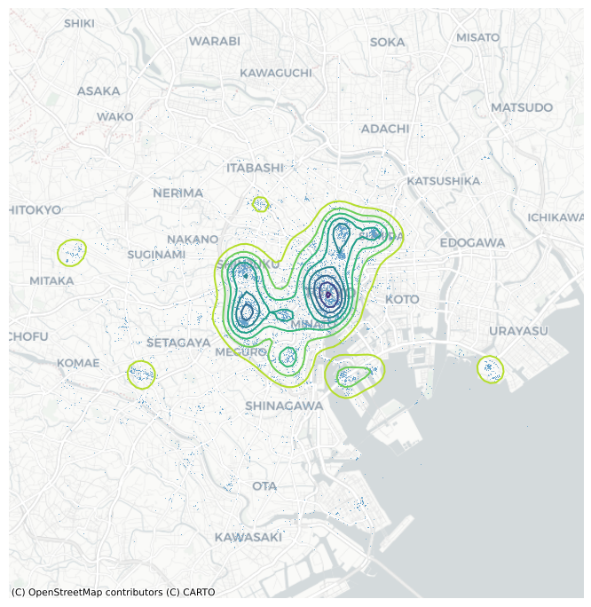
The result is a smoother output that captures the same structure of the hexbin but “eases” the transitions between different areas. This provides a better generalization of the theoretical probability distribution over space. Technically, the continuous nature of the KDE function implies that for any given point the probability of an event is 0. However, as the area around a point increases, the probability of an event within that area can be obtained. This is useful in some cases, but it is mainly of use to escape the restrictions imposed by a regular grid of hexagons or squares.
10.4 Centrography
Centrography is the analysis of centrality in a point pattern. By “centrality,” we mean the general location and dispersion of the pattern. If the hexbin above can be seen as a “spatial histogram”, centrography is the point pattern equivalent of measures of central tendency such as the mean. These measures are useful because they allow us to summarize spatial distributions in smaller sets of information (e.g., a single point). Many different indices are used in centrography to provide an indication of “where” a point pattern is, how tightly the point pattern clusters around its center, or how irregular its shape is.
10.4.1 Tendency
A common measure of central tendency for a point pattern is its center of mass. For marked point patterns, the center of mass identifies a central point close to observations that have higher values in their marked attribute. For unmarked point patterns, the center of mass is equivalent to the mean center, or average of the coordinate values. In addition, the median center is analogous to the median elsewhere, and represents a point where half of the data is above or below the point and half is to its left or right. We can analyze the mean center with our Flickr point pattern using the pointpats package in Python.
from pointpats import centrographymean_center = centrography.mean_center(db[["x", "y"]])
med_center = centrography.euclidean_median(db[["x", "y"]])It is easiest to visualize this by plotting the point pattern and its mean center alongside one another, as done to create Figure 5:
# Generate scatterplot
joint_axes = seaborn.jointplot(
x="x", y="y", data=db, s=0.75, height=9
)
# Add mean point and marginal lines
joint_axes.ax_joint.scatter(
*mean_center, color="red", marker="x", s=50, label="Mean Center"
)
joint_axes.ax_marg_x.axvline(mean_center[0], color="red")
joint_axes.ax_marg_y.axhline(mean_center[1], color="red")
# Add median point and marginal lines
joint_axes.ax_joint.scatter(
*med_center,
color="limegreen",
marker="o",
s=50,
label="Median Center"
)
joint_axes.ax_marg_x.axvline(med_center[0], color="limegreen")
joint_axes.ax_marg_y.axhline(med_center[1], color="limegreen")
# Legend
joint_axes.ax_joint.legend()
# Add basemap
contextily.add_basemap(
joint_axes.ax_joint, source=contextily.providers.CartoDB.Positron
)
# Clean axes
joint_axes.ax_joint.set_axis_off()
# Display
plt.show()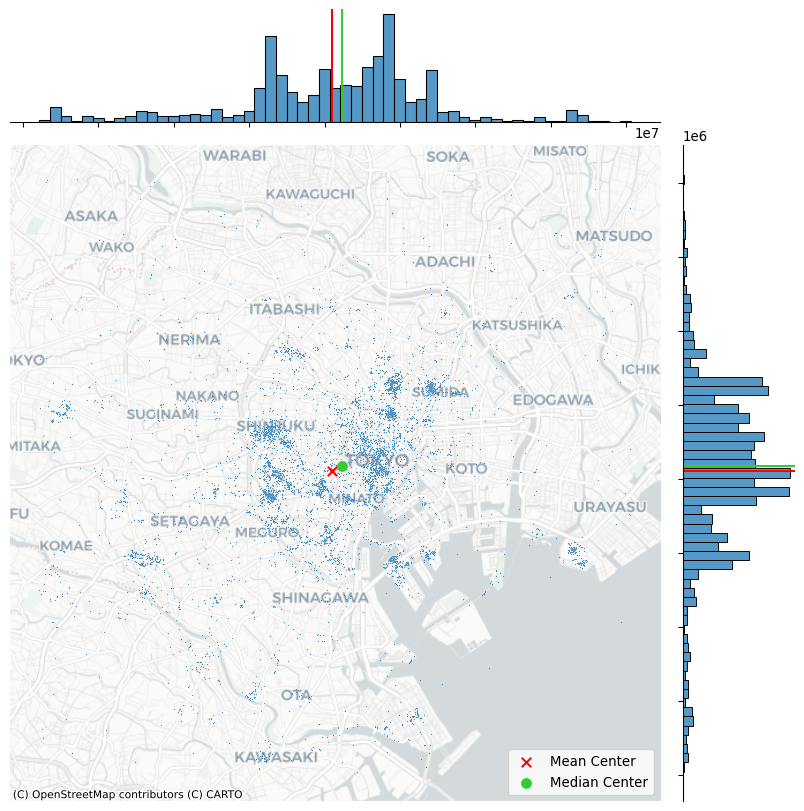
The discrepancy between the two centers is caused by the skew; there are many “clusters” of pictures far out in West and South Tokyo, whereas North and East Tokyo is densely packed, but drops off very quickly. Thus, the far out clusters of pictures pulls the mean center to the west and south, relative to the median center.
10.4.2 Dispersion
A measure of dispersion that is common in centrography is the standard distance. This measure provides the average distance away from the center of the point cloud (such as measured by the center of mass). This is also simple to compute using pointpats, using the std_distance function:
centrography.std_distance(db[["x", "y"]])np.float64(8778.218559042176)This means that, on average, pictures are taken around 8800 meters away from the mean center.
Another helpful visualization is the standard deviational ellipse, or standard ellipse. This is an ellipse drawn from the data that reflects its center, dispersion, and orientation. To visualize this, we first compute the axes and rotation using the ellipse function in pointpats:
major, minor, rotation = centrography.ellipse(db[["x", "y"]])Then, we will visualize this in Figure 6:
from matplotlib.patches import Ellipse
# Set up figure and axis
f, ax = plt.subplots(1, figsize=(9, 9))
# Plot photograph points
ax.scatter(db["x"], db["y"], s=0.75)
ax.scatter(*mean_center, color="red", marker="x", label="Mean Center")
ax.scatter(
*med_center, color="limegreen", marker="o", label="Median Center"
)
# Construct the standard ellipse using matplotlib
ellipse = Ellipse(
xy=mean_center, # center the ellipse on our mean center
width=major * 2, # centrography.ellipse only gives half the axis
height=minor * 2,
angle=numpy.rad2deg(
rotation
), # Angles for this are in degrees, not radians
facecolor="none",
edgecolor="red",
linestyle="--",
label="Std. Ellipse",
)
ax.add_patch(ellipse)
ax.legend()
# Display
# Add basemap
contextily.add_basemap(
ax, source=contextily.providers.CartoDB.Positron
)
plt.show()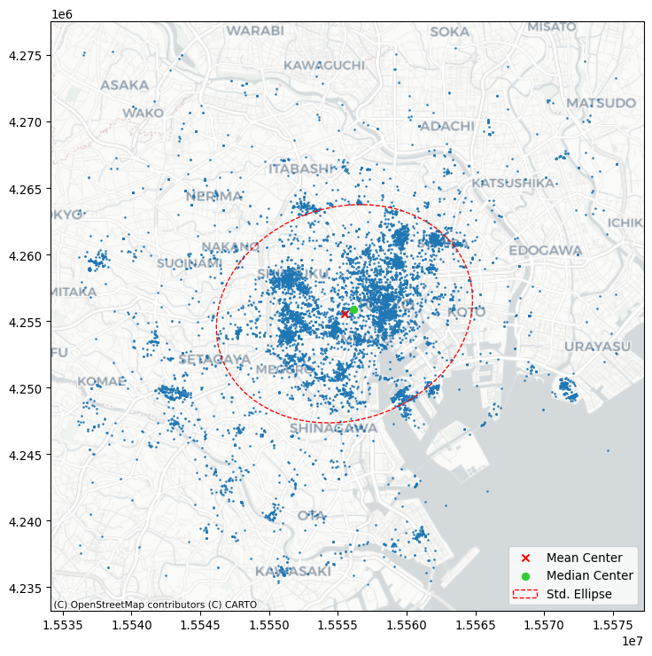
10.4.3 Extent
The last collection of centrography measures we will discuss characterizes the extent of a point cloud. Four shapes are useful, and they reflect varying levels of how “tightly” they bind the pattern.
Below, we’ll walk through how to construct each example and visualize all of them together at the end. To make things more clear, we’ll use the Flickr photos for the most prolific user in the dataset (ID: 95795770) to show how different these results can be.
user = db.query('user_id == "95795770@N00"')
coordinates = user[["x", "y"]].valuesFirst, we’ll compute the convex hull, which is the tightest convex shape that encloses the user’s photos. By convex, we mean that the shape never “doubles back” on itself; it has no divets, valleys, crenulations, or holes. All of its interior angles are smaller than 180 degrees. This is computed using the centrography.hull method.
convex_hull_vertices = centrography.hull(coordinates)Second, we’ll compute the alpha shape, which can be understood as a “tighter” version of the convex hull. One way to think of a convex hull is that it’s the space left over when rolling a really large ball or circle all the way around the shape. The ball is so large relative to the shape, its radius is actually infinite, and the lines forming the convex hull are actually just straight lines!
In contrast, you can think of an alpha shape as the space made from rolling a small ball around the shape. Since the ball is smaller, it rolls into the dips and valleys created between points. As that ball gets bigger, the alpha shape becomes the convex hull. But, for small balls, the shape can get very tight indeed. In fact, if alpha gets too small, it “slips” through the points, resulting in more than one hull! As such, the libpysal package has an alpha_shape_auto function to find the smallest single alpha shape, so that you don’t have to guess at how big the ball needs to be.
import libpysal
alpha_shape, alpha, circs = libpysal.cg.alpha_shape_auto(
coordinates, return_circles=True
)f, ax = plt.subplots(1, 1, figsize=(9, 9))
# Plot a green alpha shape
geopandas.GeoSeries(
[alpha_shape]
).plot(
ax=ax,
edgecolor="green",
facecolor="green",
alpha=0.2,
label="Tightest single alpha shape",
)
# Include the points for our prolific user in black
ax.scatter(
*coordinates.T, color="k", marker=".", label="Source Points"
)
# plot the circles forming the boundary of the alpha shape
for i, circle in enumerate(circs):
# only label the first circle of its kind
if i == 0:
label = "Bounding Circles"
else:
label = None
ax.add_patch(
plt.Circle(
circle,
radius=alpha,
facecolor="none",
edgecolor="r",
label=label,
)
)
# add a blue convex hull
ax.add_patch(
plt.Polygon(
convex_hull_vertices,
closed=True,
edgecolor="blue",
facecolor="none",
linestyle=":",
linewidth=2,
label="Convex Hull",
)
)
# Add basemap
contextily.add_basemap(
ax, source=contextily.providers.CartoDB.Positron
)
plt.legend();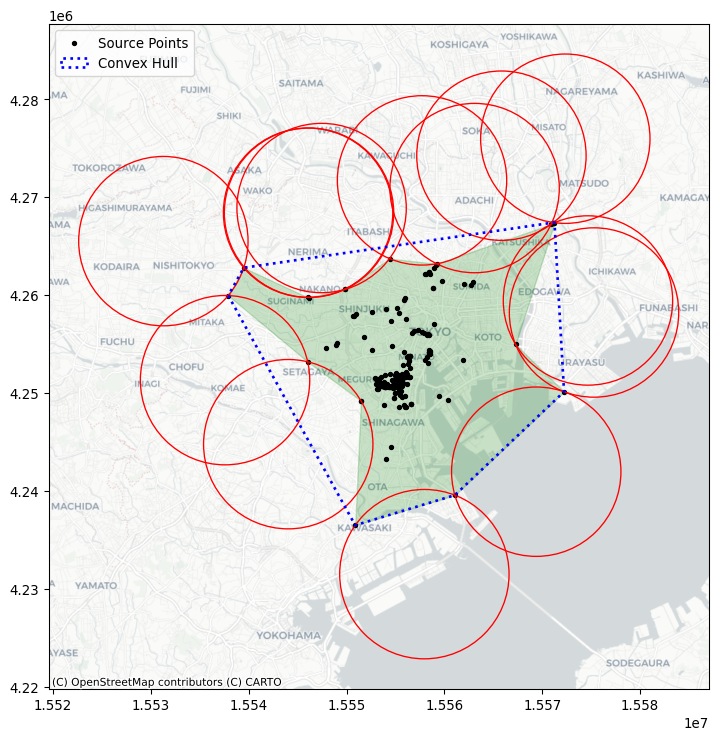
We will cover three more bounding shapes, all of them rectangles or circles. First, two kinds of minimum bounding rectangles. They both are constructed as the tightest rectangle that can be drawn around the data that contains all of the points. One kind of minimum bounding rectangle can be drawn just by considering vertical and horizontal lines. However, diagonal lines can often be drawn to construct a rectangle with a smaller area. This means that the minimum rotated rectangle provides a tighter rectangular bound on the point pattern, but the rectangle is askew or rotated.
For the minimum rotated rectangle, we will use the minimum_rotated_rectangle property from geopandas, which constructs the minimum rotated rectangle for an input multi-point object. This means that we will need to collect our points together into a single multi-point object and then compute the rotated rectangle for that object.
point_array = geopandas.points_from_xy(x=user.x, y=user.y)
min_rot_rect = point_array.union_all().minimum_rotated_rectangleAnd, for the minimum bounding rectangle without rotation, we will use the minimum_bounding_rectangle function from the pointpats package.
min_rect_vertices = centrography.minimum_bounding_rectangle(
coordinates
)Finally, the minimum bounding circle is the smallest circle that can be drawn to enclose the entire dataset. Often, this circle is bigger than the minimum bounding rectangle. It is implemented in the minimum_bounding_circle function in pointpats.
(center_x, center_y), radius = centrography.minimum_bounding_circle(
coordinates
)Now, to visualize these, we’ll convert the raw vertices into matplotlib patches:
from matplotlib.patches import Polygon, Circle, Rectangle
# Make a blue convex hull
convex_hull_patch = Polygon(
convex_hull_vertices,
closed=True,
edgecolor="blue",
facecolor="none",
linestyle=":",
linewidth=2,
label="Convex Hull",
)
# compute the width and height of the minimum bounding rectangle
min_rect_width = min_rect_vertices[2] - min_rect_vertices[0]
min_rect_height = min_rect_vertices[2] - min_rect_vertices[0]
# Make a goldenrod minimum bounding rectangle
min_rect_patch = Rectangle(
min_rect_vertices[0:2],
width=min_rect_width,
height=min_rect_height,
edgecolor="goldenrod",
facecolor="none",
linestyle="dashed",
linewidth=2,
label="Min Bounding Rectangle",
)
# and make a red minimum bounding circle
circ_patch = Circle(
(center_x, center_y),
radius=radius,
edgecolor="red",
facecolor="none",
linewidth=2,
label="Min Bounding Circle",
)Finally, we’ll plot the patches together with the photograph locations in Figure 8:
f, ax = plt.subplots(1, figsize=(10, 10))
# a purple alpha shape
geopandas.GeoSeries(
[alpha_shape]
).plot(
ax=ax,
edgecolor="purple",
facecolor="none",
linewidth=2,
label="Alpha Shape",
)
# a green minimum rotated rectangle
geopandas.GeoSeries(
[min_rot_rect]
).plot(
ax=ax,
edgecolor="green",
facecolor="none",
linestyle="--",
label="Min Rotated Rectangle",
linewidth=2,
)
# add the rest of the patches
ax.add_patch(convex_hull_patch)
ax.add_patch(min_rect_patch)
ax.add_patch(circ_patch)
ax.scatter(db.x, db.y, s=0.75, color="grey")
ax.scatter(user.x, user.y, s=100, color="r", marker="x")
ax.legend(ncol=1, loc="center left")
# Add basemap
contextily.add_basemap(
ax, source=contextily.providers.CartoDB.Positron
)
plt.show()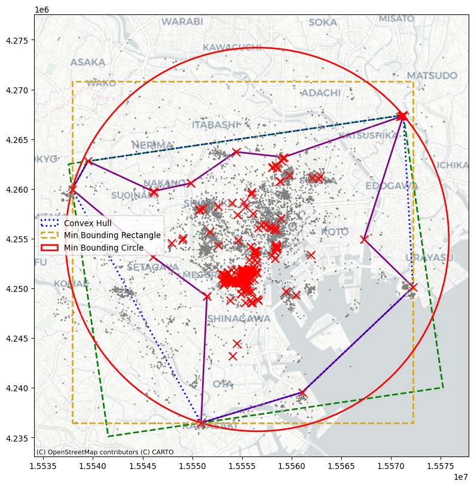
Each gives a different impression of the area enclosing the user’s range of photographs. In this, you can see that the alpha shape is much tighter than the rest of the shapes. The minimum bounding rectangle and circle are the “loosest” shapes, in that they contain the most area outside of the user’s typical area. But, they’re also the simplest shapes to draw and understand.
10.5 Randomness and clustering
Beyond questions of centrality and extent, spatial statistics on point patterns are often concerned with how even a distribution of points is. By this, we mean whether points tend to all cluster near one another or disperse evenly throughout the problem area. Questions like this refer to the intensity or dispersion of the point pattern overall. In the jargon of the last two chapters, this focus resembles the goals we examined when we introduced global spatial autocorrelation: what is the overall degree of clustering we observe in the pattern? Spatial statistics has devoted plenty of effort to understand this kind of clustering. This section will cover methods useful for identifying clustering in point patterns.
The first set of techniques, quadrat statistics, receive their name after their approach to split the data up into small areas (quadrants). Once created, these “buckets” are used to examine the uniformity of counts across them. The second set of techniques all derive from Ripley (1988) and involve measurements of the distance between points in a point pattern.
from pointpats import (
distance_statistics,
QStatistic,
random,
PointPattern,
)For the purposes of illustration, it also helps to provide a pattern derived from a known completely spatially random process. That is, the location and number of points is totally random; there is neither clustering nor dispersion. In point pattern analysis, this is known as a Poisson point process.
To simulate these processes from a given point set, you can use the pointpats.random module.
random_pattern = random.poisson(coordinates, size=len(coordinates))You can visualize this using the same methods as before, which we show in Figure 9:
f, ax = plt.subplots(1, figsize=(9, 9))
plt.scatter(
*coordinates.T,
color="k",
marker=".",
label="Observed photographs"
)
plt.scatter(*random_pattern.T, color="r", marker="x", label="Random")
contextily.add_basemap(
ax, source=contextily.providers.CartoDB.Positron
)
ax.legend(ncol=1, loc="center left")
plt.show()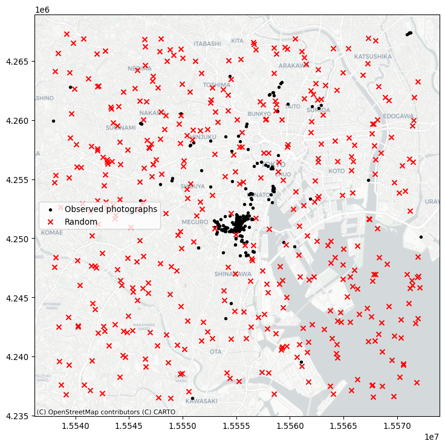
As you can see, the simulation (by default) works with the bounding box of the input point pattern. To simulate from more restricted areas formed by the point pattern, pass those hulls to the simulator! For example, to generate a random pattern within the alpha shapes:
random_pattern_ashape = random.poisson(
alpha_shape, size=len(coordinates)
)We can visualize this in Figure 10:
f, ax = plt.subplots(1, figsize=(9, 9))
plt.scatter(*coordinates.T, color="k", marker=".", label="Observed")
plt.scatter(
*random_pattern_ashape.T, color="r", marker="x", label="Random"
)
contextily.add_basemap(
ax, source=contextily.providers.CartoDB.Positron
)
ax.legend(ncol=1, loc="center left")
plt.show()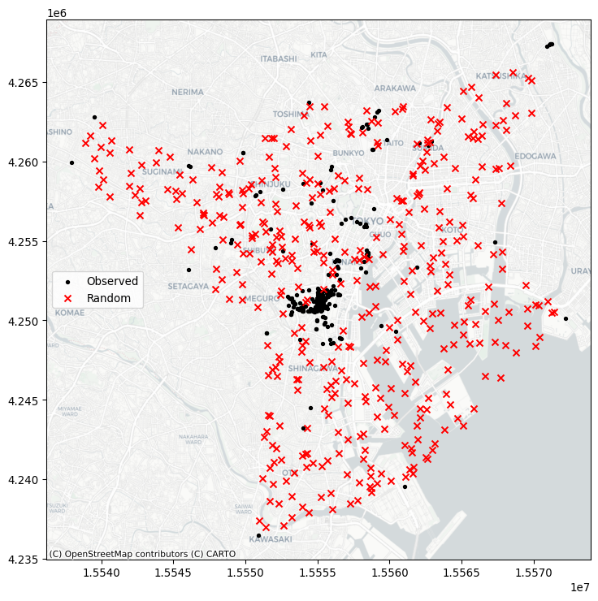
10.5.1 Quadrat statistics
Quadrat statistics examine the spatial distribution of points in an area in terms of the count of observations that fall within a given cell. By examining whether observations are spread evenly over cells, the quadrat approach aims to estimate whether points are spread out, or if they are clustered into a few cells. Strictly speaking, quadrat statistics examine the evenness of the distribution over cells using a \(\chi^2\) statistical test common in the analysis of contingency tables.
In the pointpats package, you can visualize the results using the following QStatistic.plot() method. This shows the grid used to count the events, as well as the underlying pattern, shown in Figure 11:
qstat = QStatistic(coordinates)
qstat.plot()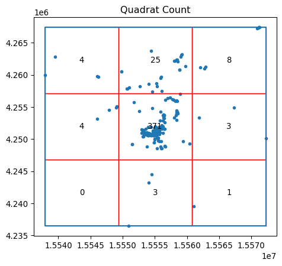
In this case, for the default of a three-by-three grid spanning the point pattern, we see that the central square has over 350 observations, but the surrounding cells have many fewer Flickr photographs. This means that the chi-squared test (which compares how likely this distribution is if the cell counts are uniform) will be statistically significant, with a very small \(p\)-value:
qstat.chi2_pvaluenp.float64(0.0)In contrast, our totally random point process will have nearly the same points in every cell, shown in Figure 12:
qstat_null = QStatistic(random_pattern)
qstat_null.plot()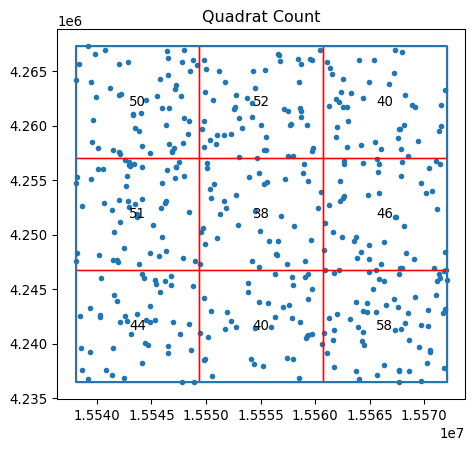
This means its p-value will be large and likely not significant:
qstat_null.chi2_pvaluenp.float64(0.46386562258792685)Be careful, however; the fact that quadrat counts are measured in a regular tiling that is overlaid on top of the potentially irregular extent of our pattern can mislead us. In particular, irregular but random patterns can be mistakenly found “significant” by this approach. Consider our random set generated within the alpha shape polygon, with the quadrat grid overlaid on top shown in Figure 13:
qstat_null_ashape = QStatistic(random_pattern_ashape)
qstat_null_ashape.plot()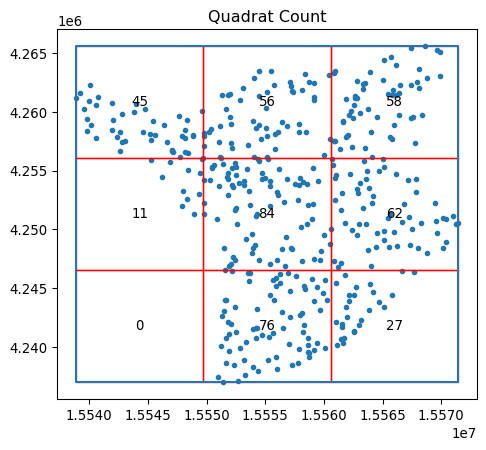
The quadrat test finds this to be statistically non-random, while our simulating process ensured that within the given study area, the pattern is a complete spatially-random process.
qstat_null_ashape.chi2_pvaluenp.float64(1.8076998392310585e-26)Thus, quadrat counts can have issues with irregular study areas, and care should be taken to ensure that clustering is not mistakenly identified. One way to interpret the quadrat statistic that reconciles cases like the one above is to think of it as a test that considers both the uniformity of points and the shape of their extent to examine whether the resulting pattern is uniform across a regular grid. In some cases, this is a useful tool; in others, this needs to be used with caution.
10.5.2 Ripley’s alphabet of functions
The second group of spatial statistics we consider focuses on the distributions of two quantities in a point pattern: nearest neighbor distances and what we will term “gaps” in the pattern. They derive from seminal work by (Ripley 1991) on how to characterize clustering or co-location in point patterns. Each of these characterizes an aspect of the point pattern as we increase the distance range from each point to calculate them.
The first function, Ripley’s \(G\), focuses on the distribution of nearest neighbor distances. That is, the \(G\) function summarizes the distances between each point in the pattern and its nearest neighbor. In Figure 14, this nearest neighbor logic is visualized with the red dots being a detailed view of the point pattern and the black arrows indicating the nearest neighbor to each point. Note that sometimes two points are mutual nearest neighbors (and so have arrows going in both directions), but some are not.
Code
# Code generated for this figure is available on the web version of the book.
f, ax = plt.subplots(1, 2, figsize=(8, 4), sharex=True, sharey=True)
ax[0].scatter(*random_pattern.T, color="red")
ax[1].scatter(
*random_pattern.T,
color="red",
zorder=100,
marker=".",
label="Points"
)
nn_ixs, nn_ds = PointPattern(random_pattern).knn(1)
first = True
for coord, nn_ix, nn_d in zip(random_pattern, nn_ixs, nn_ds):
dx, dy = random_pattern[nn_ix].squeeze() - coord
arrow = ax[1].arrow(
*coord,
dx,
dy,
length_includes_head=True,
overhang=0,
head_length=300 * 3,
head_width=300 * 3,
width=50 * 3,
linewidth=0,
facecolor="k",
head_starts_at_zero=False
)
if first:
plt.plot(
(1e100, 1e101),
(0, 1),
color="k",
marker="<",
markersize=10,
label="Nearest Neighbor to Point",
)
first = False
ax[0].axis([1.554e7, 1.556e7, 4240000, 4260000])
ax[0].set_xticklabels([])
ax[0].set_yticklabels([])
ax[0].set_xticks([])
ax[0].set_yticks([])
f.tight_layout()
ax[1].legend(bbox_to_anchor=(0.5, -0.06), fontsize=16)
plt.show()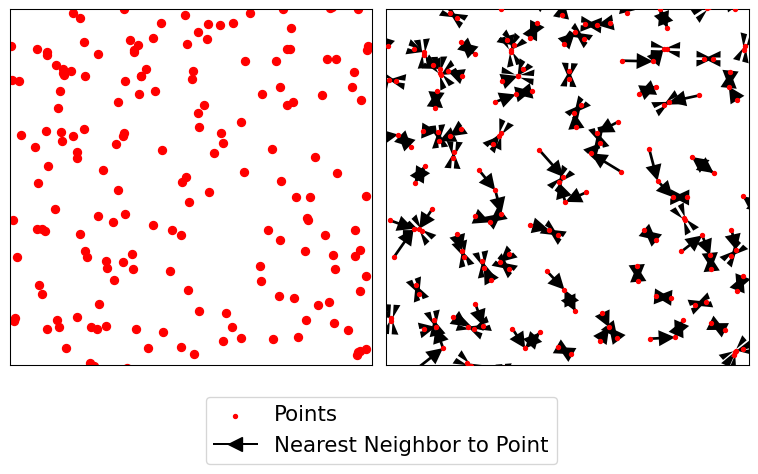
Ripley’s \(G\) keeps track of the proportion of points for which the nearest neighbor is within a given distance threshold, and plots that cumulative percentage against the increasing distance radii. The distribution of these cumulative percentages has a distinctive shape under completely spatially random processes. The intuition behind Ripley’s G goes as follows: we can learn about how similar our pattern is to a spatially random one by computing the cumulative distribution of nearest neighbor distances over increasing distance thresholds, and comparing it to that of a set of simulated patterns that follow a known spatially random process. Usually, a spatial Poisson point process is used as such reference distribution.
To do this in the pointpats package, we can use the g_test function, which computes both the G function for the empirical data and these hypothetical replications under a completely spatially random process.
g_test = distance_statistics.g_test(
coordinates, support=40, keep_simulations=True
)Thinking about these distributions of distances, a “clustered” pattern must have more points near one another than a pattern that is “dispersed”; and a completely random pattern should have something in between. Therefore, if the \(G\) function increases rapidly with distance, we probably have a clustered pattern. If it increases slowly with distance, we have a dispersed pattern. Something in the middle will be difficult to distinguish from pure chance.
We can visualize this in Figure 15. On the left, we plot the \(G(d)\) function, with distance-to-point (\(d\)) on the horizontal axis and the fraction of nearest neighbor distances smaller than \(d\) on the right axis. The empirical cumulative distribution of nearest neighbor distances is shown in red. In blue, simulations (like the random pattern shown in the previous section) are shown. The bright blue line represents the average of all simulations, and the darker blue/black band around it represents the middle 95% of simulations.
In Figure 15, we see that the red empirical function rises much faster than simulated completely spatially random patterns. This means that the observed pattern of this user’s Flickr photographs are closer to their nearest neighbors than would be expected from a completely spatially random pattern. The pattern is clustered.
Code
f, ax = plt.subplots(
1, 2, figsize=(9, 3), gridspec_kw=dict(width_ratios=(6, 3))
)
# plot all the simulations with very fine lines
ax[0].plot(
g_test.support, g_test.simulations.T, color="k", alpha=0.01
)
# and show the average of simulations
ax[0].plot(
g_test.support,
numpy.median(g_test.simulations, axis=0),
color="cyan",
label="median simulation",
)
# and the observed pattern's G function
ax[0].plot(
g_test.support, g_test.statistic, label="observed", color="red"
)
# clean up labels and axes
ax[0].set_xlabel("distance")
ax[0].set_ylabel("% of nearest neighbor\ndistances shorter")
ax[0].legend()
ax[0].set_xlim(0, 2000)
ax[0].set_title(r"Ripley's $G(d)$ function")
# plot the pattern itself on the next frame
ax[1].scatter(*coordinates.T)
# and clean up labels and axes there, too
ax[1].set_xticks([])
ax[1].set_yticks([])
ax[1].set_xticklabels([])
ax[1].set_yticklabels([])
ax[1].set_title("Pattern")
f.tight_layout()
plt.show()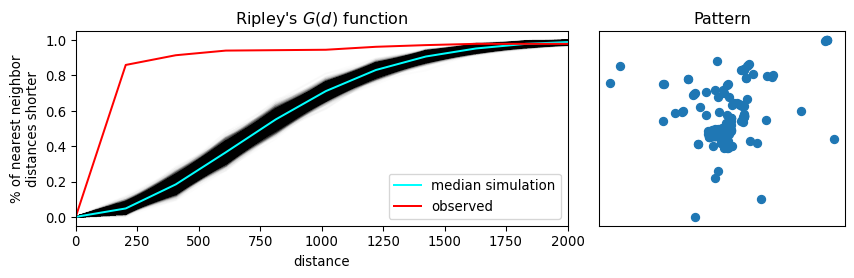
The second function we introduce is Ripley’s \(F\). Where the \(G\) function works by analyzing the distance between points in the pattern, the F function works by analyzing the distance to points in the pattern from locations in empty space. That is why the \(F\) function is called the “the empty space function”, since it characterizes the typical distance from arbitrary points in empty space to the point pattern. More explicitly, the \(F\) accumulates, for a growing distance range, the percentage of points that can be found within that range from a random point pattern generated within the extent of the observed pattern. If the pattern has large gaps or empty areas, the \(F\) function will increase slowly. But, if the pattern is highly dispersed, then the \(F\) function will increase rapidly. The shape of this cumulative distribution is then compared to those constructed by calculating the same cumulative distribution between the random pattern and an additional, random one generated in each simulation step.
We can use similar tooling to investigate the \(F\) function, since it is so mathematically similar to the \(G\) function. This is implemented identically using the f_test function in pointpats. Since the \(F\) function estimated for the observed pattern increases much more slowly than the \(F\) functions for the simulated patterns, we can be confident that there are many gaps in our pattern; i.e., the pattern is clustered.
f_test = distance_statistics.f_test(
coordinates, support=40, keep_simulations=True
)We can visualize this as before in Figure 16.
Code
f, ax = plt.subplots(
1, 2, figsize=(9, 3), gridspec_kw=dict(width_ratios=(6, 3))
)
# plot all the simulations with very fine lines
ax[0].plot(
f_test.support, f_test.simulations.T, color="k", alpha=0.01
)
# and show the average of simulations
ax[0].plot(
f_test.support,
numpy.median(f_test.simulations, axis=0),
color="cyan",
label="median simulation",
)
# and the observed pattern's F function
ax[0].plot(
f_test.support, f_test.statistic, label="observed", color="red"
)
# clean up labels and axes
ax[0].set_xlabel("distance")
ax[0].set_ylabel("% of nearest point in pattern\ndistances shorter")
ax[0].legend()
ax[0].set_xlim(0, 2000)
ax[0].set_title(r"Ripley's $F(d)$ function")
# plot the pattern itself on the next frame
ax[1].scatter(*coordinates.T)
# and clean up labels and axes there, too
ax[1].set_xticks([])
ax[1].set_yticks([])
ax[1].set_xticklabels([])
ax[1].set_yticklabels([])
ax[1].set_title("Pattern")
f.tight_layout()
plt.show()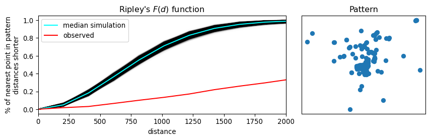
Ripley’s “alphabet” extends to several other letter-named functions that can be used for conducting point pattern analysis in this vein. Good “next steps” in your point pattern analysis journey include the book by (Baddeley, Rubak, and Turner 2015), and the pointpats documentation for guidance on how to run these in Python.
10.6 Identifying clusters
The previous two sections on exploratory spatial analysis of point patterns provide methods to characterize whether point patterns are dispersed or clustered in space. Another way to see the content in those sections is that they help us explore the degree of overall clustering. However, knowing that a point pattern is clustered does not necessarily give us information about where that (set of) cluster(s) resides. To do this, we need to switch to a method able to identify areas of high density of points within our pattern. In other words, in this section we focus on the existence and location of clusters. This distinction between clustering and clusters of points is analogue to that discussed in the context of spatial autocorrelation (Chapters 6 and 7). The notion is the same, the differences in the techniques we examine in each part of the book relate to the unique nature of points we referred to in the beginning of the book. Remember that, while the methods we explored in the earlier chapters take the location of the spatial objects (points, lines, polygons) as given and focus on understanding the configurations of values within those locations, the methods discussed in this chapter understand points as events that happen in particular locations but that could happen in a much broader set of places. Factoring in this underlying relevance of the location of an object itself is what makes the techniques in this chapter distinct.
From the many spatial point clustering algorithms, we will cover one called DBSCAN (Density-Based Spatial Clustering of Applications) (Ester et al. 1996). DBSCAN is a widely used algorithm that originated in the area of knowledge discovery and machine learning and that has since spread into many areas, including the analysis of spatial points. In part, its popularity resides in its intellectual simplicity and computational tractability. In some ways, we can think of DBSCAN as a point pattern counterpart of the local statistics we explored in Chapter 7. They do, however, differ in fundamental ways. Unlike the local statistics we have seen earlier, DBSCAN is not based on an inferential framework, but it is instead a deterministic algorithm. This implies that, unlike the measures seen before, we will not be able to estimate a measure of the degree to which the clusters found are compatible with cases of spatial randomness.
From the point of view of DBSCAN, a cluster is a concentration of at least m points, each of them within a distance of r of at least another point in the cluster. Following this definition, the algorithm classifies each point in our pattern into three categories:
- Noise, for those points outside a cluster.
- Cores, for those points inside a cluster with at least
mpoints in the cluster within distancer. - Borders, for points inside a cluster with less than
mother points in the cluster within distancer.
The flexibility (but also some of the limitations) of the algorithm resides in that both m and r need to be specified by the user before running DBSCAN. This is a critical point, as their value can influence significantly the final result. Before exploring this in greater depth, let us get a first run at computing DBSCAN in Python:
# Define DBSCAN
clusterer = DBSCAN()
# Fit to our data
clusterer.fit(db[["x", "y"]])DBSCAN()In a Jupyter environment, please rerun this cell to show the HTML representation or trust the notebook.
On GitHub, the HTML representation is unable to render, please try loading this page with nbviewer.org.
Parameters
Following the standard interface in scikit-learn, we first define the algorithm we want to run (creating the clusterer object), and then we fit it to our data. Once fit, clusterer contains the required information to access all the results of the algorithm. The core_sample_indices_ attribute contains the indices (order, starting from zero) of each point that is classified as a core. We can have a peek into it to see what it looks like:
# Print the first 5 elements of `cs`
clusterer.core_sample_indices_[:5]array([ 1, 22, 30, 36, 42])The printout above tells us that the second (remember, Python starts counting at zero!) point in the dataset is a core, as are the 23rd, 31st, 36th, and 43rd points. This attribute has a variable length, depending on how many cores the algorithm finds.
The second attribute of interest is labels_:
clusterer.labels_[:5]array([-1, 0, -1, -1, -1])The labels_ attribute always has the same length as the number of points used to run DBSCAN. Each value represents the index of the cluster a point belongs to. If the point is classified as noise, it receives a −1. Above, we can see that the second point belongs to cluster 1, while the others in the list are effectively not part of any cluster. To make things easier later on, let us turn the labels into a Series object that we can index in the same way as our collection of points:
lbls = pandas.Series(clusterer.labels_, index=db.index)Now that we already have the clusters, we can proceed to visualize them. There are many ways in which this can be done. We will start just by coloring points in a cluster in red and noise in grey, as done in Figure 17.
# Setup figure and axis
f, ax = plt.subplots(1, figsize=(9, 9))
# Subset points that are not part of any cluster (noise)
noise = db.loc[lbls == -1, ["x", "y"]]
# Plot noise in grey
ax.scatter(noise["x"], noise["y"], c="grey", s=5, linewidth=0)
# Plot all points that are not noise in red
# NOTE how this is done through some fancy indexing, where
# we take the index of all points (tw) and substract from
# it the index of those that are noise
ax.scatter(
db.loc[db.index.difference(noise.index), "x"],
db.loc[db.index.difference(noise.index), "y"],
c="red",
linewidth=0,
)
# Add basemap
contextily.add_basemap(
ax, source=contextily.providers.CartoDB.Positron
)
# Remove axes
ax.set_axis_off()
# Display the figure
plt.show()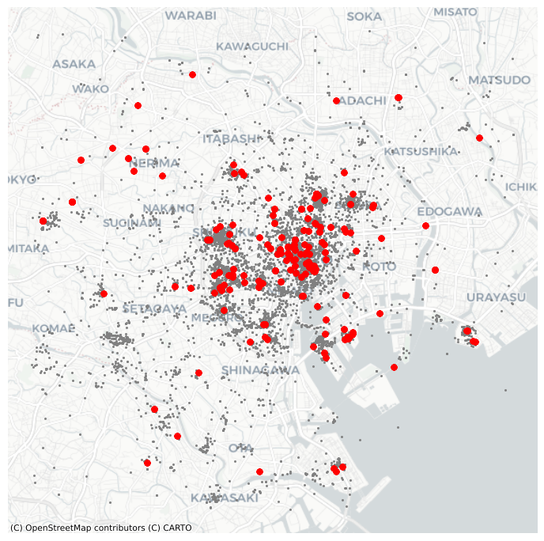
Although informative, the result of this run is not particularly satisfactory. There are way too many points that are classified as “noise”.
This is because we have run DBSCAN with the default parameters: a radius of 0.5 and a minimum of five points per cluster. Since our data is expressed in meters, a radius of half a meter will only pick up hyper local clusters. This might be of interest in some cases but, in others, it can result in odd outputs.
If we change those parameters, we can pick up more general patterns. For example, let us say a cluster needs to, at least, have roughly 1% of all the points in the dataset:
# Obtain the number of points 1% of the total represents
minp = numpy.round(db.shape[0] * 0.01)
minpnp.float64(100.0)At the same time, let us expand the maximum radius to, say, 500 meters. Then we can re-run the algorithm and plot the output, all in the same cell this time to create Figure 18:
# Rerun DBSCAN
clusterer = DBSCAN(eps=500, min_samples=int(minp))
clusterer.fit(db[["x", "y"]])
# Turn labels into a Series
lbls = pandas.Series(clusterer.labels_, index=db.index)
# Setup figure and axis
f, ax = plt.subplots(1, figsize=(9, 9))
# Subset points that are not part of any cluster (noise)
noise = db.loc[lbls == -1, ["x", "y"]]
# Plot noise in grey
ax.scatter(noise["x"], noise["y"], c="grey", s=5, linewidth=0)
# Plot all points that are not noise in red
# NOTE how this is done through some fancy indexing, where
# we take the index of all points (db) and substract from
# it the index of those that are noise
ax.scatter(
db.loc[db.index.difference(noise.index), "x"],
db.loc[db.index.difference(noise.index), "y"],
c="red",
linewidth=0,
)
# Add basemap
contextily.add_basemap(
ax, source=contextily.providers.CartoDB.Positron
)
# Remove axes
ax.set_axis_off()
# Display the figure
plt.show()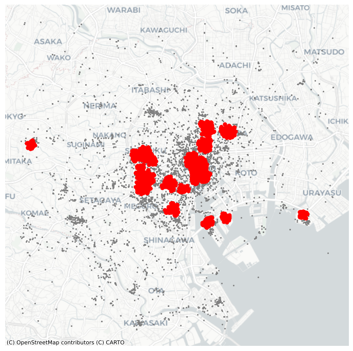
10.7 Conclusion
Overall, this chapter has provided an overview of methods to analyze point patterns. We have begun our point journey by visualizing their location and learning a way to overcome the “cluttering” challenge that large point patterns present us with. From a graphical display, we have moved to statistical characterization of their spatial distribution. In this context, we have learned about central tendency dispersion and extent, and we have positioned these measures as the point pattern counterparts of traditional statistics such as the mean or the standard deviation. These measures provide a summary of an entire pattern, but they tell us little about the spatial organization of each point. To that end, we have introduced the quadrat and Ripley’s functions. These statistical devices help us in characterizing whether a point pattern is spatially clustered or dispersed. We have wrapped up the chapter going one step further and exploring methods to identify the location of clusters: areas of the map with high density of points. Taken altogether, point pattern analysis has many applications across classical statistical fields as well as in data science. Using the techniques discussed here, you should be able to answer fundamental questions about point patterns that represent widely varied phenomena in the world, from the location where photographs were taken, to the distribution of bird nests, to the clustering of bike crashes in a city.
10.8 Questions
- What is the trade-off when picking the hexagon granularity when “hexbinning”? Put another way, can we pick a “good” number of bins for all problems? If not, how would you recommend to select a specific number of bins?
- Kernel Density Estimation (KDE) gets around the need to partition space in “buckets” to count points inside each of them. But, can you think of the limitations of applying this technique? To explore them, reproduce the KDE map from Figure 4, but change the arguments of the type of kernel (
kernel) and the size of the bandwidth (bw). Consult the documentation ofseaborn.kdeplotto learn what each of them controls. What happens when the bandwidth is very small? How does that relate to the number of bins in the hexbin plot? - Given a hypothetical point pattern, what characteristics would it need to meet for the mean and median centers to coincide?
- Using
libpysal.cg.alpha_shape, plot what happens to the alpha hull for \(\alpha = 0,.2,.4,.6,.8,1,1.5,2,4\). What happens asalphaincreases? - The choice of extent definition you adopt may influence your final results significantly. To further internalize this realization, compute the density of photographs in the example we have seen using each of the extent definitions covered (minimum bounding/rotate circle/rectangle, convex hull and alpha shape). Remember, the density can be obtained by dividing the number of photographs by the area of the extent.
- Given the discussions in questions 1 and 2, how do you think the density of quadrats affect quadrat statistics?
- Can you use information from Ripley’s functions to inform the choice of DBSCAN parameters? How? Use the example with Tokyo photographs covered above to illustrate your ideas.
10.9 Next steps
For a much deeper and conceptual discussion of the analysis of spatial point patterns, consult Baddeley, Rubak and Turner. Their coverage is often the canonical resource for people interested in this topic:
Baddeley, Adrian, Ege Rubak, and Rolf Turner. 2015. Spatial Point Patterns: Methodology and Applications with R. Boca Raton, FL: CRC Press.